Link
Youtube |
Main base of operations |
|---|---|
| Youtube Member Registration | You can register as a member of our Youtube channel here Benefits include a badge that changes next to the name according to the number of days elapsed, original pictograms that can be used for comments, distribution of an original standby screen (for PC and smartphone/once a month), and limited live broadcasts (irregular). |
Japanese Learning Channel |
Established due to the great number of requests for Japanese language instruction |
Twitch |
We broadcast live here when practicing FPS games or watching movies simultaneously Amazon Prime members can subscribe for free. Benefits include original badges, original emojis, archive viewing, and more |
| I tweet about live broadcasts, various announcements, and daily life | |
| I update it very occasionally. The fake account has more followers, but this is the official one | |
TikTok |
I update it very occasionally. The fake account has more followers, but this is the official one |
|  BOOTH |
Official merchandise is mainly sold here |
Discord |
Official Discord server You can use it to communicate with other fans and learn languages I sometimes joins too |